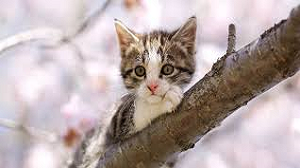

| Alimentación | Reproducción |
| Son felinos carnívoros. Los individuos que habitan hogares suelen ser alimentados con comida especialmente diseñada para sus necesidades biológicas | Los gatos domésticos se reproducen con varios individuos a lo largo de su vida. A menudo, los machos pelean para aparearse con una hembra y quien gana la lucha se gana también el derecho de aparearse con la hembra en cuestión |
| Amenazas y conservación | Comportamiento |
| Los gatos domésticos son muy abundantes en los entornos urbanos y rurales y no se les considera verdaderamente amenazados; su población mundial es de unos 500 millones. | La personalidad del gato es fuente de bromas y de dichos populares, ya que, a diferencia del perro, es un animal fuertemente independiente y orgulloso. |

Hábitat y distribución
Pueden encontrarse gatos domésticos en casi cualquier lugar del mundo, exceptuando la Antártida. Su presencia es un hecho en sitios poblados por humanos, dado que la relación entre ambos tiene una larga historia. La domesticación de Felis silvestrus catus pudo tener origen en la necesidad humana de contrarrestar las plagas de roedores y otras especies invasoras, y hasta la actualidad la relación suele ser muy cercana. Aunque muchos gatos tienen la fortuna de habitar un hogar humano y de ser cuidados y alimentados cariñosamente, varios son “silvestres” al haber nacido de otros gatos de la calle o por haber sido abandonados. Otros gatos salvajes tienen la facultad de prosperar en praderas, bosques, terrenos agrícolas y hasta la tundra.
Comportamiento
La personalidad del gato es fuente de bromas y de dichos populares, ya que, a diferencia del perro, es un animal fuertemente independiente y orgulloso. Los gatos domésticos son territoriales y utilizan marcas de orina en árboles, muebles, troncos y rocas para delimitar su rango geográfico. En ocasiones manifiesta un comportamiento huraño, muy solitario o agresivo, y durante su vejez aumentan el número de horas de descanso. En contraste, los gatitos son muy curiosos y juguetones. Prefieren las horas del día para descansar y durante el crepúsculo o la noche salen a cazar o merodear. Los gatos que viven en las calles pueden agruparse y formar colonias en donde se establece una dominancia jerárquica. No son raras las veces en que estos gatos luchan por territorio, para aparearse con una hembra o para defender a las crías.Existen más de 100 razas de Felis silvestrus catus. Estos gatos poseen un cuerpo pequeño pero enormemente ágil. Suelen pesar unos 4-5 kilogramos, aunque otras razas, especialmente aquellas de pelo largo, tienden a obtener un cuerpo más robusto y pesado. Los gatos domésticos tienen probabilidad de desarrollar obesidad gracias a su condición sedentaria y a la sobrealimentación. En contraste, los gatos que no poseen un hogar fijo suelen ser más esbeltos debido a su complicada disposición de alimentos. Poseen garras retráctiles, dientes afilados, bigotes o vibrisas en el hocico y generalmente una larga cola que les permite mantener el equilibrio durante los saltos. Las patas cuentan con almohadillas suaves excelentes para acechar sigilosamente a sus pequeñas y ocasionales presas, apoyando su peso sobre las puntas de los dedos. La mayoría de los gatos son mestizos y una pequeña parte es de raza pura. Con excepción de alguna que otra raza, todos los gatos están cubiertos con un pelaje corto o largo que presenta variedad de tonalidades y patrones de coloración en función de la raza. La mayoría de los individuos de 3 o más colores son casi siempre hembras.